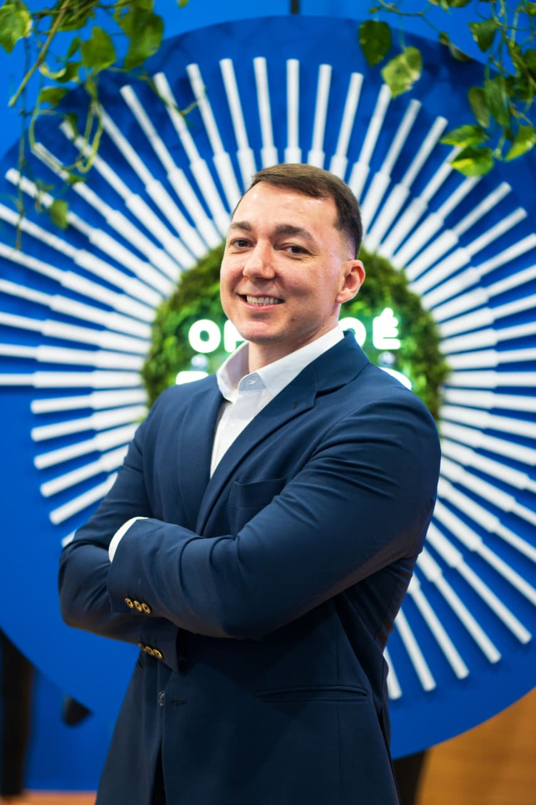

Seguro de vida, previdência, seguro auto e consultoria financeira e comercial para pessoas, autônomos e empresas. Por quem passou 16 anos dentro de fundos de pensão cuidando da aposentadoria de milhares de participantes.

Comecei em 2010 na área de investimentos de um fundo de pensão. Passei por quatro entidades de previdência complementar: Infraprev, Petros, REFER e MAG. Em todas, a mesma responsabilidade: cuidar do dinheiro que vai pagar a aposentadoria de milhares de pessoas.
Nesse caminho escrevi políticas de investimento, fiz estudos de ALM, que casam o que o plano tem com o que vai precisar pagar, acompanhei risco de crédito, mercado e liquidez e prestei contas à PREVIC. Sentei em comitê de investimentos e traduzi números para Diretoria e Conselho Fiscal.
É esse olhar que levo para quem me procura hoje: primeiro o plano, depois o produto. Seguro de vida, previdência, o seguro do carro e as finanças da família ou da empresa pedem a mesma disciplina de uma carteira de fundo de pensão. Só muda a escala.
Sou corretor de seguros registrado na SUSEP, certificado C-Pro R e CPA, e membro da Comissão Técnica de Investimentos da ABRAPP. Atendo pessoas, profissionais autônomos e empresas em todo o Brasil, de perto ou a distância.
Proteção, aposentadoria, patrimônio e as finanças do dia a dia se resolvem juntos. Abaixo, as quatro frentes em que atuo, quase sempre combinadas conforme o momento de cada cliente.
Vida e previdência são o par que protege a renda de hoje e constrói a de amanhã. Comparo coberturas, custos e regras entre seguradoras antes de indicar, e explico a conta linha por linha.
Cotação comparada entre seguradoras, cobertura dimensionada ao uso real do carro e apoio na hora do sinistro, que é quando o seguro mostra para que serve.
Organizo as finanças antes de qualquer produto: orçamento, reserva, dívidas, proteção e aposentadoria. Para empresas, fluxo de caixa, custo e preço com a mesma objetividade.
Estruturo o comercial de quem precisa vender melhor e levo educação financeira para equipes e grupos, como faço há anos dentro das fundações.
Quatro frentes, um método. Primeiro o plano, depois o produto. Nunca o contrário.
Não são frases de parede. São os critérios que uso para aceitar um caso, montar uma proposta e sustentar uma recomendação.
Primeiro entendo renda, dependentes, dívidas e objetivos. A apólice ou o plano entra depois, na medida certa.
Passei 16 anos decidindo com o dinheiro dos outros sob regra de fundo de pensão. Trato o seu com o mesmo critério.
Corretor existe para comparar seguradoras. Indico o que serve ao seu caso e mostro as alternativas que descartei.
Taxa de carregamento, taxa de administração, franquia e carência explicadas antes de assinar, em português claro.
Leio o cenário, mas decido pelo horizonte da sua vida, não pela manchete da semana.
Vida muda, carro muda, empresa muda. Revisito a carteira com você todo ano, sem esperar o sinistro.
Cotação de seguro, dúvida sobre previdência, revisão do que você já tem ou um diagnóstico das finanças da família ou da empresa. A primeira conversa não tem compromisso.
Mande uma mensagem curta com o que você precisa. Respondo pessoalmente.